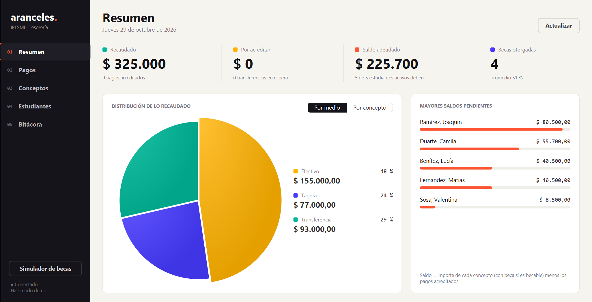
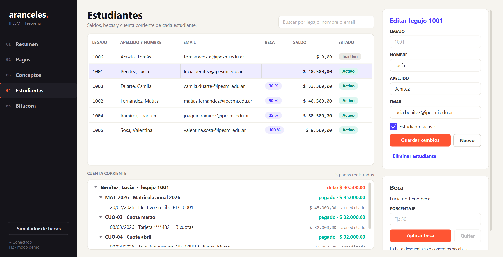

Aplicación de escritorio que administra los conceptos de pago del instituto (matrícula, cuotas, derechos de examen), los pagos de cada estudiante en efectivo, tarjeta o transferencia, el cálculo de saldos pendientes y la aplicación de becas. Está hecha con Java 21, JavaFX 21, JPA (Hibernate 6) sobre MySQL y Maven.
| Unidad | Dónde se aplica |
|---|---|
| 4 · Excepciones y colecciones | PagoDuplicadoException, MontoInvalidoException y BecaNoAplicableException heredan de ArancelException (verificada). EstudianteService usa un HashMap<Integer, Estudiante> indexado por legajo; PagoService un ArrayList<Pago>, también EnumMap, FilteredList y streams. |
| 5 · Swing | SimuladorBecaFrame: formulario con BorderLayout, GridBagLayout, GridLayout y FlowLayout; eventos ActionListener, ChangeListener (JSlider / JSpinner) y DocumentListener. Se abre desde JavaFX en el hilo de Swing (EDT). |
| 6 · JavaFX avanzado | Patrón MVC con 6 vistas FXML y sus controladores; TableView (con filtros y celdas propias), TreeView (cuenta corriente), PieChart, CSS propio y animaciones (Fade, Translate, Scale, Timeline). |
| 7 · Persistencia JPA | Entidades Estudiante, Concepto y Pago (abstracta) con herencia SINGLE_TABLE; EntityManager por operación con transacciones; CRUD genérico y consultas JPQL (JOIN FETCH, COUNT, GROUP BY). |
| 8 · Patrones y pruebas | Logger Singleton (LoggerTransacciones), Factory (PagoFactory) y 78 pruebas JUnit 5: Logger, Factory, cálculo de saldos y servicio JPA sobre H2. |
AppContext.PagoEfectivo, PagoTarjeta y PagoTransferencia comparten una tabla (columna discriminadora medio). La fábrica valida los datos de cada medio y fija el estado inicial: efectivo y tarjeta quedan acreditados; la transferencia, pendiente hasta que tesorería la acredita.BigDecimal (2 decimales, redondeo HALF_UP), nunca double, para no perder centavos.CalculadoraSaldos no depende de la base, por eso se prueba de forma unitaria; el servicio se prueba integrado con H2 en memoria.logs/transacciones.log, guarda el historial y avisa a la vista Bitácora en vivo.persistence.xml → config/db.properties → propiedades del sistema. Con -Dpagos.demo=true se usa H2 con datos de ejemplo, sin MySQL.Task para no congelar la ventana.

| Dificultad | Solución |
|---|---|
| Aplicar una beca del 100 % era rechazado como “no aplicable”. | Lo detectó la prueba becaCompleta: se verificaba el saldo con la beca nueva (que da 0). Ahora se controla con el saldo actual, antes de aplicarla. |
| Mostrar “pago duplicado” y no “monto vacío” al intentar pagar un concepto ya cancelado. | Se reordenaron las validaciones del servicio: primero se busca el duplicado y después se valida el monto. |
| Que el script SQL y las entidades JPA coincidan (enums, booleanos, herencia). | Enums guardados como texto (EnumType.STRING) y columnas VARCHAR en el script; se ejecutó el script en H2 (modo MySQL) y sus consultas de saldo dan lo mismo que la aplicación. |
| Swing y JavaFX en el mismo programa: dos hilos de interfaz y la JVM no terminaba al cerrar. | El simulador se crea con SwingUtilities.invokeLater (EDT) y App.stop() cierra JPA y llama a System.exit. |
Textos invisibles dentro de los ScrollPane. | JavaFX deriva el color del texto de -fx-background; al ser transparente elegía blanco. Se definió el color de fondo real. |
| Columnas recortadas en pantallas de 1366×768. | Anchos mínimos por columna, política CONSTRAINED_RESIZE_POLICY_ALL_COLUMNS, formulario más compacto y ventana maximizada en pantallas chicas. |
| Muchas validaciones y casos borde difíciles de probar a mano. | Pruebas parametrizadas JUnit 5 (@ParameterizedTest, @CsvSource): montos 0 / negativos / 3 decimales, beca 0 / 100 / 100,01 / NaN, pagar el saldo exacto y un centavo más, 1 y 12 cuotas. |
mvn test → 78 pruebas, 0 fallas. LoggerTransaccionesTest (unicidad, concurrencia, archivo, mensajes nulos/vacíos), PagoFactoryTest (tipos válidos e inválidos, dígitos y cuotas), CalculadoraSaldosTest (parciales, becas, centavos, inactivos) y PagoServiceTest (JPA + H2: duplicados, montos, becas, acreditación, JPQL).
1) Ejecutar sql/pagos_aranceles.sql en MySQL. 2) Copiar config/db.properties.ejemplo como db.properties con el usuario y la contraseña. 3) mvn javafx:run. Sin MySQL: mvn compile exec:java -Dpagos.demo=true.